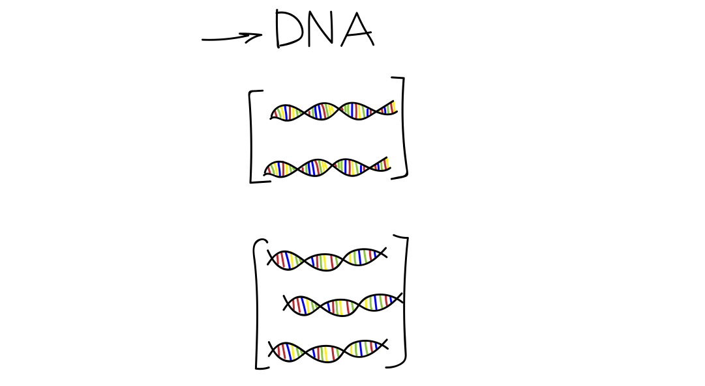
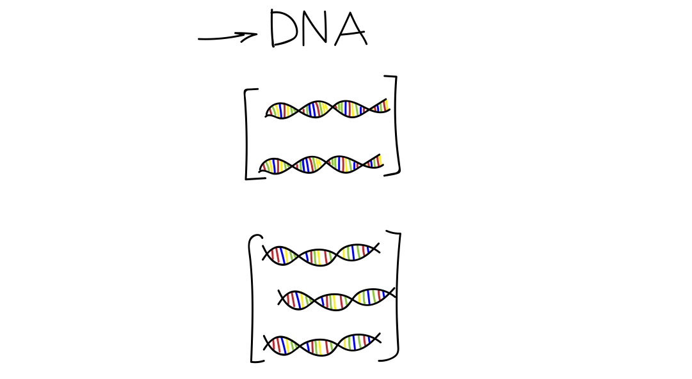

About myself

Education
2016 - BSc, Applied Mathematics, St. Petersburg, Russia.
2018 - MSc, Algorithmic Bioinformatics, St. Petersburg, Russia.
Present - PhD, Computer Science, St. Petersburg, Russia.
Current research
Currently live in: Zürich, Switzerland
Junior Researcher, Prof. Wegmann's group,
University of Fribourg, Fribourg, Switzerland.
Demographic History
Demographic History
Demographic History
Visualization


drawn by demes [Gower et al. 2022]
Why Reconstruct
Demographic History
?
Understand population history

Why Reconstruct
Demographic History
?
Conservation biology studies

Demographic Inference
Demographic Inference
 

Demographic Inference
Tools


Demographic Inference
Tools
Examples:
- $\partial a \partial i$ [Gutenkunst et al. 2009]
- moments [Jouganous et al. 2017]
- momentsLD [Ragsdale and Gravel 2019, 2020]
- momi2 [Kamm et al. 2020]
- fastsimcoal2 [Excoffier et al. 2013, 2021]
- Dical2 [Steinrücken et al. 2019]
Issues of Existing Tools
Issue 1: Model Specification
Specification
for $\partial a \partial i$
Issue 2: Model Selection
Issue 3: Optimization

Most tools use local search optimization algorithms:
- BFGS
- Nelder–Mead method
- Powell's method
- EM, ECM
They require initial estimation and perform search for local optimum.
Local vs Global Optimization
Demographic Inference
for Four and Five Populations
Demographic Inference
for Four and Five Populations
Challenges:
- Time-expensive likelihood evaluations
- Many phylogenetic tree topologies
- Great number of model parameters
GADMA — Global search Algorithm for Demographic Model Analysis
- Several likelihood engines ($\partial a \partial i$, moments, momi2, momentsLD)
- Common interface
- New model specification
- Effective global optimization

New Model Specification
New Model Specification
New model in GADMA that is specified only by the number of epochs.


Available up to three populations
Flexible Dynamics
New model in GADMA has flexible dynamics of population size change.
Population dynamic can be:
- Constant (sudden change)
- Linear
- Exponential


Additional controls

Global Optimization:
Genetic Algorithm
Global Optimization:
Genetic Algorithm
Genetic algorithm:
- Widely used global optimization.
- Uses ideas of evolution and natural selection.
- Can discover solutions in large search space.
GADMA implements a combination of the genetic algorithm followed by a local search method.
Hyperparameters of the genetic algorithm are optimized (SMAC).
Global Optimization:
Bayesian Optimization
Bayesian Optimization
Machine learning-based technique for optimizing expensive functions.
Enables demographic inference for 4 and 5 populations in GADMA.
Usecase 1:
Human Out-Of-Africa History
Human Out-Of-Africa History
History obtained by GADMA has better likelihood and CLAIC.
Usecase 2:
Using Different Likelihood Engines
Stdpopsim
: Easy Data Simulation
Likelihood Engines Comparison
$\partial a \partial i$
moments
momi2
momentsLD
Ground truth: 2,200
Usecase 3:
Four Population Demographic Inference
Four Population Demographic Inference
History obtained by GADMA has better likelihood.
Conclusions and Future Work
Conclusions and Future Work
GADMA:
- Addresses issues of classical demographic inference tools.
- Outperformes existing tools.
- Provides interface to use different likelihood engines easily.
- Enables demographic inference for 4 and 5 populations.
Future work:
- Include new likelihood engines and optimizations.
- Develop method for automatic model construction.
Thank you!

Slides: